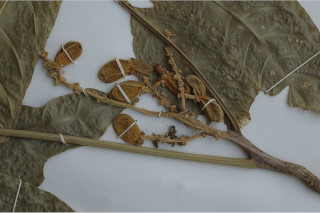
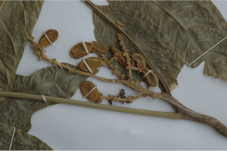

Large shrubs to small trees up to 5 m tall.
ದೊಡ್ಡ ಗಾತ್ರದ ಪೊದೆಗಳು ಅಥವಾ 5 ಮೀ ಎತ್ತರದವರೆಗಿನ ಸಣ್ಣ ಮರಗಳು.
Large shrubs to small trees up to 5 m tall.
பெரிய குத்துச்செடி முதல் சிறிய மரம், 5 மீ. உயரம் வரை வளரக்கூடியது.
Bark grey, lenticellate.
ತೊಗಟೆ ಬೂದು ಬಣ್ಣದಲ್ಲಿದ್ದು ಬೆಂಡು ರಂಧ್ರಗಳನ್ನು ಹೊಂದಿರುತ್ತದೆ.
Bark grey, lenticellate.
மரத்தின் பட்டை சாம்பல் நிறமானது, பட்டைத்துளைகள் (லெண்டிசெல்லேட்) உடையது.
Branchlets terete, lenticellate, slightly pubescent when young.
ಕಿರುಕೊಂಬೆಗಳು ದುಂಡಾಗಿರುತ್ತವೆ, ಬೆಂಡು ರಂಧ್ರಗಳನ್ನು ಹೊಂದಿರುತ್ತದೆ. ಎಳೆಯ -ದಾಗಿದ್ದಾಗ ಸ್ವಲ್ಪಮಟ್ಟಿಗೆ ಸೂಕ್ಷ್ಮ ಮೃದು ತುಪ್ಪಳದ ಸಮೇತವಿರುತ್ತವೆ.
Branchlets terete, lenticellate, slightly pubescent when young.
சிறியநுனிக்கிளைகள் குறுக்குவெட்டுத் தோற்றத்தில் வளையமானது, பட்டைத்துளைகள் (லெண்டிசெல்லேட்) உடையது, இளம்பருவத்தில் சிறிது உரோமங்களுடையது.
Leaves compound, paripinnate, alternate, spiral, to 60 cm long; rachis pulvinate, obscurely striate, pubescent when young; petiolule 0.5-1 cm, canaliculate, glabrous; leaflets 4-6 pairs, opposite-subopposite or alternate, 12-21 x 3.5-6 cm, narrow elliptic to elliptic-oblong, apex acuminate, base acute to attenuate, margin entire, chartaceous, glabrous; midrib raised above; secondary_nerves 8-10 pairs, gradually curved and ascending; tertiary_nerves broadly reticulate.
ಎಲೆಗಳು ಸಂಯುಕ್ತವಾಗಿದ್ದು ಮತ್ತು ಸಮಗರಿ ರೂಪಿಗಳಾಗಿರುತ್ತವೆ,ಪರ್ಯಾಯ ಮತ್ತು ಸುತ್ತು ಜೋಡನಾ ವ್ಯವಸ್ಥೆಯಲ್ಲಿದ್ದು 50 ಸೆಂ.ಮೀ.ವರೆಗಿನ ಉದ್ದವಿರುತ್ತವೆ;ಅಕ್ಷದಿಂಡು ಉಬ್ಬಿದ ಬುಡದ ಸಮೇತವಿದ್ದು,ಅಸ್ಪಷ್ಡವಾದಉಬ್ಬು ಸಾಲಿನ ಗುರುತುಗಳ ಸಮೇತವಿರುತ್ತದೆ ಮತ್ತು ಎಳೆಯದಾಗಿದ್ದಾಗ ಮೃದುತುಪ್ಪಳವನ್ನು ಹೊಂದಿರುತ್ತದೆ; ಉಪತೊಟ್ಟು 0.5 ರಿಂದ 1 ಸೆಂ.ಮೀ.ಉದ್ದವಿರುತ್ತದೆ ಹಾಗೂ ಕಾಲುವೆಗೆರೆ ಸಮೇತವಿದ್ದು, ರೋಮರಹಿತವಾಗಿರುತ್ತದೆ;ಉಪಪತ್ರಗಳು 4 ರಿಂದ 6 ಜೋಡಿಗಳಿದ್ದು ಅಭಿಮುಖಿ, ಉಪ ಅಭಿಮುಖಿ ಅಥವಾ ಪರ್ಯಾಯ ಜೋಡನಾ ವ್ಯವಸ್ಥೆಯಲ್ಲಿರುತ್ತವೆ, ಗಾತ್ರದಲ್ಲಿ 12-21 X 3.5 – 6 ಸೆಂ.ಮೀ. ಇದ್ದು,ಸಂಕುಚಿತ ಅಂಡವೃತ್ತದಿಂದ ಅಂಡವೃತ್ತ-ಚತುರಸ್ರದ ಆಕಾರದಲ್ಲಿರುತ್ತವೆ,ಕಿರು ಪತ್ರಗಳ ತುದಿ ಕ್ರಮೇಣ ಚೂಪಾಗುವ ಮಾದರಿಯಲ್ಲಿದ್ದು ಬುಡ ಚೂಪಾದುದರಿಂದ ಒಳಬಾಗಿದವರೆಗಿನ ಮಾದರಿಯಲ್ಲಿರುತ್ತದೆ, ಅಂಚು ನಯವಾಗಿದ್ದು ಮೇಲ್ಮೈ ಕಾಗದವನ್ನೋಲುವ ಮಾದರಿಯಲ್ಲಿರುತ್ತದೆ ಮತ್ತು ರೋಮರಹಿತವಾಗಿರುತ್ತವೆ;ಮಧ್ಯನಾಳ ಮೇಲ್ಭಾಗದಲ್ಲಿ ಮೇಲೆದ್ದಿರುತ್ತದೆ;ಎರಡನೇ ದರ್ಜೆಯ ನಾಳಗಳು 8 ರಿಂದ 10 ಜೋಡಿಗಳಿದ್ದು ಕ್ರಮೇಣವಾಗಿ ಬಾಗಿದ್ದು ಆರೋಹಣ ಮಾದರಿಯಲ್ಲಿರುತ್ತವೆ;ಮೂರನೇ ದರ್ಜೆಯ ನಾಳಗಳು ವಿಶಾಲ ಜಾಲಬಂಧ ನಾಳ ವಿನ್ಯಾಸದಲ್ಲಿರುತ್ತವೆ.
Leaves compound, paripinnate, alternate, spiral, to 60 cm long; rachis pulvinate, obscurely striate, pubescent when young; petiolule 0.5-1 cm, canaliculate, glabrous; leaflets 4-6 pairs, opposite-subopposite or alternate, 12-21 x 3.5-6 cm, narrow elliptic to elliptic-oblong, apex acuminate, base acute to attenuate, margin entire, chartaceous, glabrous; midrib raised above; secondary_nerves 8-10 pairs, gradually curved and ascending; tertiary_nerves broadly reticulate.
இலைகள் கூட்டிலை, இரட்டைபடை சிறகுவடிவக்கூட்டிலை (பேரிபின்னேட்), மாற்றுஅடுக்கமானவை, சுழல் போன்று அமைந்தவை, 60 செ.மீ. நீளமானது; மத்தியகாம்பு (ராக்கிஸ்) பல்வினேட், கோடுகளுடையது, இளம்பருவத்தில் உரோமங்களுடையது; சிற்றிலைக்காம்பு 0.5-1 செ.மீ., குறுக்குவெட்டுத் தோற்றத்தில் கேனாலிகுலேட், உரோமங்களற்றது; சிற்றிலைகள் 4-6 ஜோடிகள், எதிரடுக்கமானவை - கிட்டதட்ட எதிரடுக்கமானவை அல்லது மாற்றுஅடுக்கமானவை, 12-21 X 3.5-6 செ.மீ., குறுகிய நீள்வட்ட வடிவானது முதல் நீள்வட்டம்-நீள்சதுர வடிவானது, அலகின் நுனி அதிக்கூரியது, அலகின் தளம் கூரியது முதல் அட்டனுவேட், அலகின் விளிம்பு முழுமையானது, சார்ட்டோசியஸ், உரோமங்களற்றது; மையநரம்பு மேற்புறத்தில் அலகின் பரப்பைவிட உயர்ந்து இருக்கும்; இரண்டாம் நிலை நரம்புகள் 8-10 ஜோடிகள், சீராக வளைந்தவை மற்றும் நுனி நோக்கி வளைந்தவை; மூன்றாம் நிலை நரம்புகள் அகன்ற வலைப்பின்னல் போன்றவை.
Inflorescence axillary or terminal panicles; flowers polygamodioecious, white, sessile.
ಪುಷ್ಪಮಂಜರಿಗಳು ಅಕ್ಷಾಕಂಕುಳಿನಲ್ಲಿನ ಅಥವಾ ತುದಿಯಲ್ಲಿನ ಪುನರಾವೃತ್ತಿಯಾಗಿ ಕವಲೊಡೆಯುವ ಮಾದರಿಯವು; ಹೂಗಳು ಸಂಕೀರ್ಣಲಿಂಗಿಗಳಾಗಿದ್ದುಗಂಡು ಮತ್ತು ಹೆಣ್ಣು ಹೂಗಳು ಪ್ರತ್ಯೇಕ ಸಸ್ಯಗಳಲ್ಲಿರುತ್ತವೆ ಮತ್ತು ತೊಟ್ಟುರಹಿತವಾಗಿರುತ್ತವೆ.
Inflorescence axillary or terminal panicles; flowers polygamodioecious, white, sessile.
மஞ்சரி இலைக்கோணங்களில் அல்லது தண்டின் நுனியில் காணப்படும் பேனிக்கிள் வகை; மலர்கள் பாலிகேமொடையீசியஸ், வெள்ளை நிறமானது, காம்பற்றது.
Drupes of 1-3, basally connate, ellipsoid, 3.5 x 2 cm; seeds ellipsoid, black.
ಡ್ರೂಪ್ಗಳು 1ರಿಂದ 3 ಇದ್ದು ಬುಡಭಾಗದಲ್ಲಿ ಆಜನ್ಮ ಸಂಯುಕ್ತವಾಗಿರುತ್ತವೆ ;ಅಂಡವೃತ್ತದ ಆಕಾರದಲ್ಲಿದ್ದು,3.5 X 2 ಸೆಂ.ಮೀ. ಗಾತ್ರ ಹೊಂದಿರುತ್ತವೆ;ಬೀಜಗಳು ಅಂಡವೃತ್ತದ ಆಕಾರದಲ್ಲಿದ್ದು,ಕಪ್ಪು ಬಣ್ಣ ಹೊಂದಿರುತ್ತವೆ.
Drupes of 1-3, basally connate, ellipsoid, 3.5 x 2 cm; seeds ellipsoid, black.
உள்ளோட்டுத்தசைகனி (ட்ரூப்) 1-3, தளத்தில் இணைந்தவை, நீள்வட்ட வடிவானது, 3.5 X 2 செ.மீ.; விதைகள் நீள்வட்ட வடிவானது, கருப்பு நிறமானது.

 
